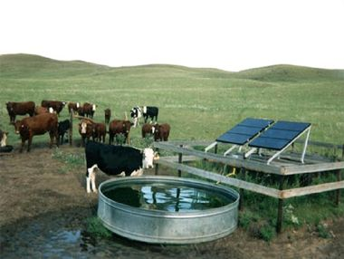

Alternate Water Sources and Supplemental Feed for Livestock
What is it?
Alternate water sources are off-stream watering areas for livestock. This offers protection to riparian vegetation, improves stream water quality, and provides a permanent, clean source of water for livestock. Access to alternate water sources in upland pastures are often preferred by livestock, can improve livestock health, and can improve production (especially when used in conjuction with alternate shade sources and grazing systems ). Supplemental feed (like protein or salt) areas are often implemented along with alternate water sources to provide a more efficient grazing system on the ranch and increase utilization of upland pastures.
 (photo from Arkansas Economic Development Commission)
Conservation Benefits
- reduces streambank erosion
- reduces deposition of manure in and along streams improving water quality
- reduces damage to riparian vegetation
What does it include?
Developement and implementation of alternate water systems will depend on size of the herd, size of the ranch, grazing systems, and access to water sources. Many ranches will dig a well and use a pump system to provide a permanent water source. Other types of systems include gravity systems, fuel pumps, solar pumps, and hauling water. Technical experts should be consulted to determine the best approach for the ranch.
Alternate Water Sources and Supplemental Feed Links
- Alternative livestock watering systems (Ontario Ministry of Agriculture and Food)
- Best management practices for livestock farms (University of Arkansas Cooperative Extention Service)
- Developing off-stream water sources (North Carolina State University)
- Drinking Water Quality for Beef Cattle: an environment friendly & production management enhancement technique (Montana State University)
- Hydraulic rams for off-stream livestock watering (U. of Georgia Cooperative Extension Service)
- Managing stock access to streams: alternative stock watering (p. 361; Cooperative Research Centre for Catchment Hydology)
- Off-stream watering in pasture without fencing (p.17; Chesapeake Bay Program)
- Off-stream watering with stream fencing and rotational grazing (p.18; Chesapeake Bay Program)
- Offstream watering to reduce livestock use of watercourses and riparian areas (British Columbia Ministry of Agriculture and Lands)
- Pasture Management Alternate Water For Cattle (North Carolina Department of Environment and Natural Resources)
- Riparian grazing and off-stream livestock watering (Agriculture and Agri-food Canada)
- Solar-powered livestock watering systems (Appropriate Technology Transfer for Rural Areas)
- Solar-powered livestock watering systems (The University of Tennessee Agricultural Extension Service)
Alternate Water Sources and Feed Bibliography
- Arouridis et al. 2005. Livestock grazing management impacts on stream water quality: a review. Journal of the Americal Water Resources Association 41: 591-606.
- Bailey. 2004. Management strategies for optimal grazing distribution and use of arid rangelands. Journal of Animal Science 82: 147-153.
- Goodwin and Miner. 1996. The potential of off-stream livestock watering to reduce water quality impacts. Bioresource Technology 58: 285-290.
- Porath et al. 2002. Offstream water and trace mineral salt as management strategies for improved cattle distribution. Journal of Animal Science 80: 346-356.